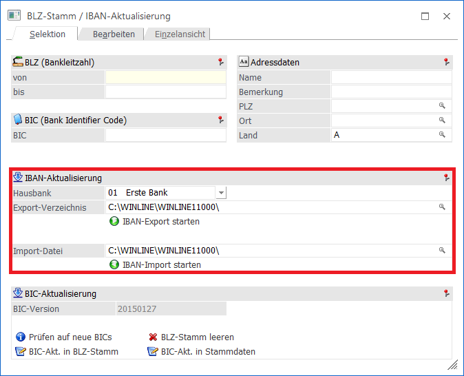
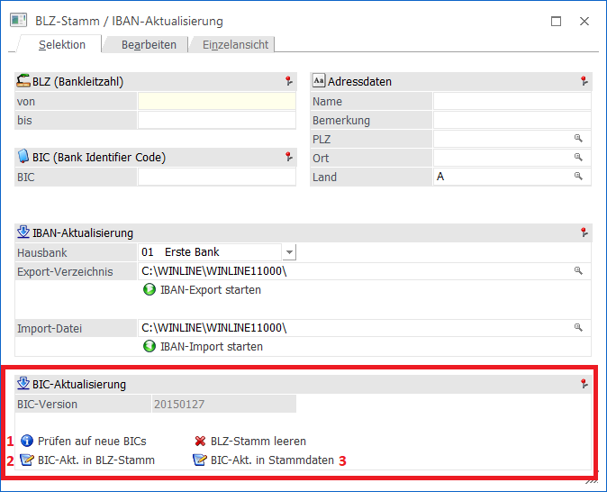

Um die IBAN-Aktualisierungen einspielen zu können, gibt es im WinLine START unter dem Menüpunkt
1 WinLine START
1 Optionen
1 Bankleitzahlen
die Möglichkeit die vorhandene IBAN.csv zu exportieren und die von der Bank überarbeitete Datei wieder zu importieren.

Ø BIC-Aktualisierung
Im WinLine START
1 Optionen
1 Bankleitzahlen
wird die BIC-Aktualisierung durchgeführt. Dieser Vorgang besteht aus drei Schritten.
1.Schritt
die WinLine wird auf eine neue BIC-Version überprüft. Die BIC-Version wird daneben im Format "yyyymmdd" angezeigt.
2. Schritt
Die BIC-Aktualisierung wird in den BLZ-Stamm geschrieben.
3. Schritt
Die BIC-Aktualisierung wird in die Stammdaten geschrieben. Sind in den Stammdaten bereits BIC-Daten vorhanden und die BIC-Aktualisierung bringt BIC-Änderungen mit sich, werden diese Daten editiert.
Bei den folgenden BIC- bzw. IBAN-Aktualisierungen wird bei Nichtvorhandensein eines Bank-LKZ stattdessen das LKZ vom Mandantenstamm übernommen:
ü BIC-Aktualisierung der Stammdaten,
ü IBAN-Export,
ü IBAN-Import und
ü IBAN-Berechnungsbutton (hier wird das Mandantenstamm-LKZ für die Berechnung der IBAN herangezogen (nur für A und D) und im jeweiligen Fenster in das LKZ-Feld geschrieben)
